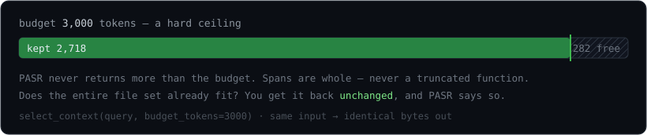
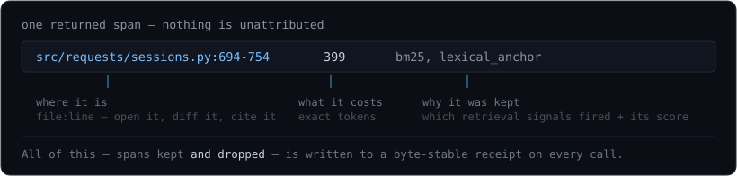
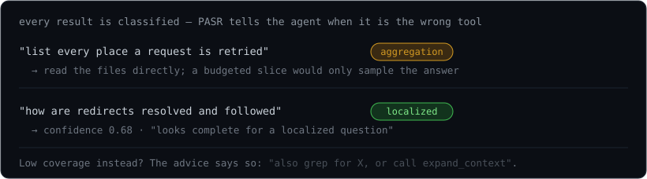
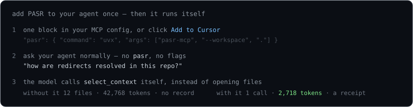

An agent working in a real repo has two bad options: read whole files and burn its context window on code that never mattered, or grep-and-guess and miss the file that held the answer. Either way, you cannot see what it looked at — no record, no line numbers, no reason.
You set a token ceiling; PASR never returns more — and it packs whole spans, never a truncated function. If the full file set already fits, you get it back unchanged.

Every span carries file:line, a token count, its retrieval score, and
why it was kept. A byte-stable receipt — of what was kept and what was
dropped — lands on disk for every call.

Each result is classified — localized / trace /
aggregation — with a confidence and advice. PASR tells the agent when it is
the wrong tool for the question.

No daemon, no vector database, no index to build, offline by default.
uvx pasr-mcp and it runs.
One command in Claude Code:
claude mcp add pasr -- uvx pasr-mcp --workspace .
Or paste this into your client's MCP config (Claude Desktop, Cursor, Windsurf, Cline, Zed, …):
{ "mcpServers": { "pasr": { "command": "uvx", "args": ["pasr-mcp", "--workspace", "."] } } }
After that you never type pasr. Ask your agent a question the normal
way — "how does redirect handling work here?", "what breaks if I change
HTTPAdapter?" — and the model calls select_context /
trace_dependencies itself instead of opening whole files.

Without an agent:
pip install pasr-mcp, then pasr explain "<question>" prints
the same receipt.
One localized question — "how are redirects resolved and followed" — against
psf/requests:
PASR select_context | agent reads the repo | |
|---|---|---|
| input tokens | 2,718 — 94% less | 42,768 |
| tool round trips | 1 | 1 large read |
| provenance | file:line + reason, all 10 spans | none |
| wrong-tool signal | localized · conf 0.68 · "looks complete" | — |
| wall time | ~0.3 s, offline (no API, no index) | — |
| PASR | repo-map (aider) |
embedding search (claude-context, Cody) | grep / ripgrep MCP |
|
|---|---|---|---|---|
| Setup | none | none | embedder + vector DB + index | none |
| Returns | bodies + file:line + reason + score | signatures, no bodies | chunks, no reason | keyword hits |
| Hard token budget | never exceeded | truncates | top-k, no cap | dumps everything |
| Deterministic | yes — byte-identical | ~ | no (ANN + drift) | yes |
| Says "wrong tool for this" | yes | no | no | no |
| Audit trail | a receipt per call | no | no | no |
| Dependency-closure trace | forward + reverse (impact) | no | no | no |
On the offline bake-off (50
tasks, 10 repos, 6k-token budget, no API, no GPU), select_context ties a
full repo-map on "how does this work" questions (0.84) using 10× less text; with
map_tokens=1200 it matches repo-map overall (0.90) at 100% critical-file
coverage while still carrying real code.
Full table ↗
A 50-task, 10-repo evaluation — a real model answering from only what each arm supplies, a second model judging:
A bounded efficiency result, not a superiority claim. Pre-registered, with the supporting runs.
query + file globs → discover safe workspace files, tokenize, line-aligned chunks → lossless-under-budget check: does the whole thing already fit? return it → candidates: BM25 (Okapi) + lexical-anchor coverage + tree-sitter symbols + optional sub-word / MiniLM semantic scorer → fuse by reciprocal-rank fusion → reserve an active window (prefix + tail of the likely answer region) → hard-budget pack (knapsack), whole spans only, dependency-ordered → classify the query, score confidence, write the receipt → return spans + provenance + token accounting + advice
RRF needs no score calibration across the rankers — only their rank orders — so BM25, symbol hits, and the semantic scorer combine without tuning weights.